numpy
matplotlib
seaborn
numpy 배열은 np.array 함수를 사용하여 생성
np.array
파이썬의 리스트를 인자로 전달하여 생성
import numpy as np a = np.array([1, 2, 3]) print(a) # [1 2 3]
numpy 배열의 타입은 numpy.ndarray임
numpy.ndarray
print(type(a)) # <class 'numpy.ndarray'>
numpy 배열의 타입은 dtype 속성으로 확인 가능
dtype
print(a.dtype) # int64
numpy 배열의 차원은 ndim 속성으로 확인 가능
ndim
print(a.ndim) # 1
numpy 배열의 크기는 shape 속성으로 확인 가능
shape
print(a.shape) # (3,)
numpy 배열의 크기는 size 속성으로 확인 가능
size
print(a.size) # 3
np.int8
np.int16
np.int32
np.int64
np.uint8
np.uint16
np.uint32
np.uint64
np.float16
np.float32
np.float64
np.float128
np.complex64
np.complex128
np.complex256
np.bool
np.linspace 함수는 세 개의 인자를 받음
np.linspace
시작값과 끝값 사이에 지정한 개수만큼의 데이터를 생성
x = np.linspace(0, 10, 5) print(x) # [ 0. 2.5 5. 7.5 10. ]
예시: COVID-19 글로벌 진행 상황
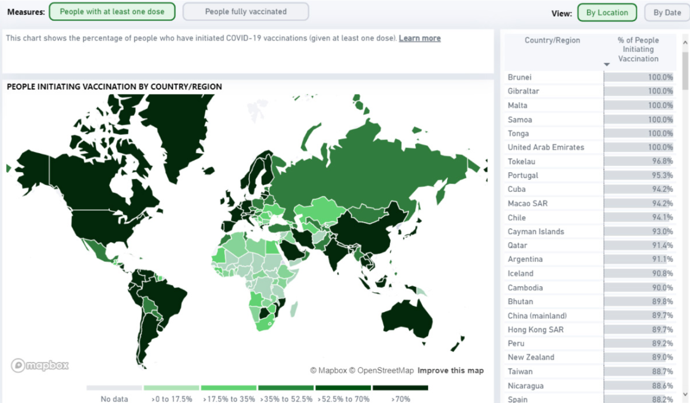
예시: UN의 지속가능한 발전 목표 분석
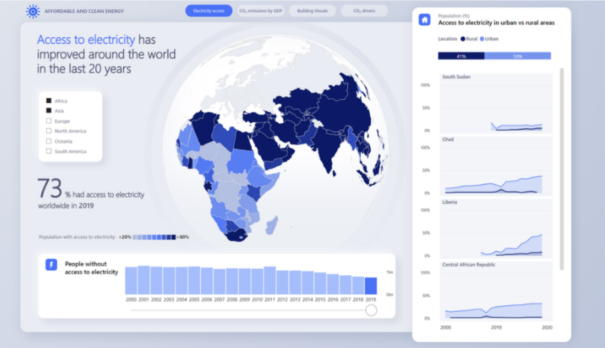
파이썬에서 가장 널리 사용되는 데이터 시각화 라이브러리
matplotlib의 서브패키지
pyplot
pylab
pyplot을 사용하기 위해서는 다음과 같이 임포트
import matplotlib.pyplot as plt
이차함수 의 그래프를 그려보자.
import matplotlib.pyplot as plt # matplotlib의 서브패키지 pyplot 임포트 def f(x, a, b, c): # 이차함수 정의 return a * x ** 2 + b * x + c # 이차함수의 값 계산 x = np.linspace(-10, 10, 100) # x 좌표 생성 y = f(x, 1, 2, 3) # y 좌표 생성 plt.plot(x, y) # 그래프 그리기 plt.show() # 그래프 출력
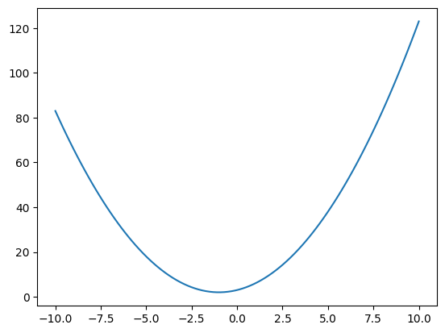
다음과 같이 함수를 작성할 수도 있음
import matplotlib.pyplot as plt def make_quad(a, b, c): def f(x): return a * x ** 2 + b * x + c return f f = make_quad(a=1, b=2, c=3) x = np.linspace(-10, 10, 100) plt.plot(x, f(x)) plt.show()
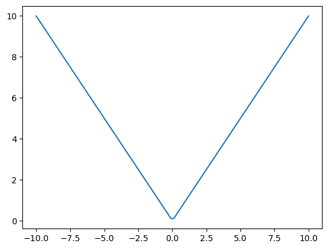
import matplotlib.pyplot as plt x = np.linspace(-10, 10, 100) y = np.abs(x) # x의 절댓값 plt.plot(x, y) plt.show()
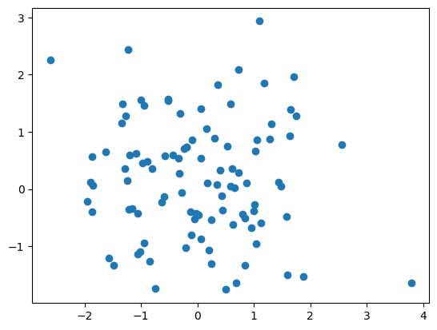
import matplotlib.pyplot as plt # np.random.randn: 평균 0, 표준편차 1인 # 정규분포에서 100개의 난수 생성 x = np.random.randn(100) # x 좌표 y = np.random.randn(100) # y 좌표 plt.scatter(x, y) plt.show()
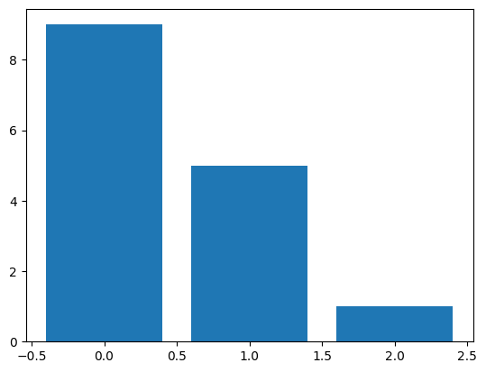
import matplotlib.pyplot as plt x = np.arange(3) # [0, 1, 2] # 1부터 9까지의 정수 중에서 3개의 난수 생성 y = np.random.randint(1, 10, 3) # [9, 5, 1] plt.bar(x, y) plt.show()
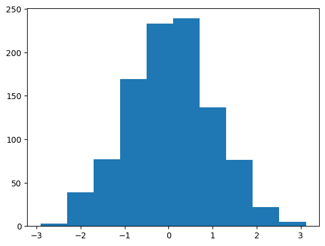
import matplotlib.pyplot as plt # 평균 0, 표준편차 1인 정규분포에서 # 1000개의 난수 생성 x = np.random.randn(1000) plt.hist(x) plt.show()
import matplotlib.pyplot as plt x = np.random.randint(1, 10, 3) # [5, 8, 7] plt.pie(x) plt.show()
seaborn은 matplotlib을 기반으로 만들어진 파이썬 데이터 시각화 라이브러리
seaborn의 장점
seaborn을 사용하기 위해서는 다음과 같이 임포트
import seaborn as sns
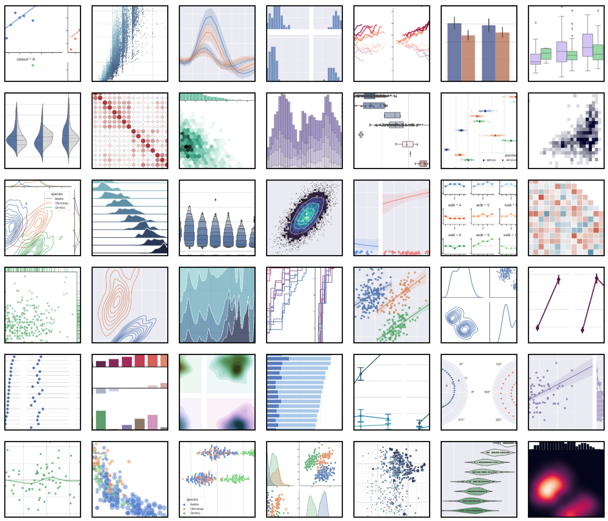
seaborn gallery
Dataset
import pandas as pd import seaborn as sns df = pd.read_csv('train.csv') df.loc[df["Sex"] == "male", "Sex"] = 0 df.loc[df["Sex"] == "female", "Sex"] = 1 df.loc[df["Embarked"] == "S", "Embarked"] = 0 df.loc[df["Embarked"] == "C", "Embarked"] = 1 df.loc[df["Embarked"] == "Q", "Embarked"] = 2 df = df.drop("PassengerId", axis=1) sns.pairplot(df, hue="Survived")
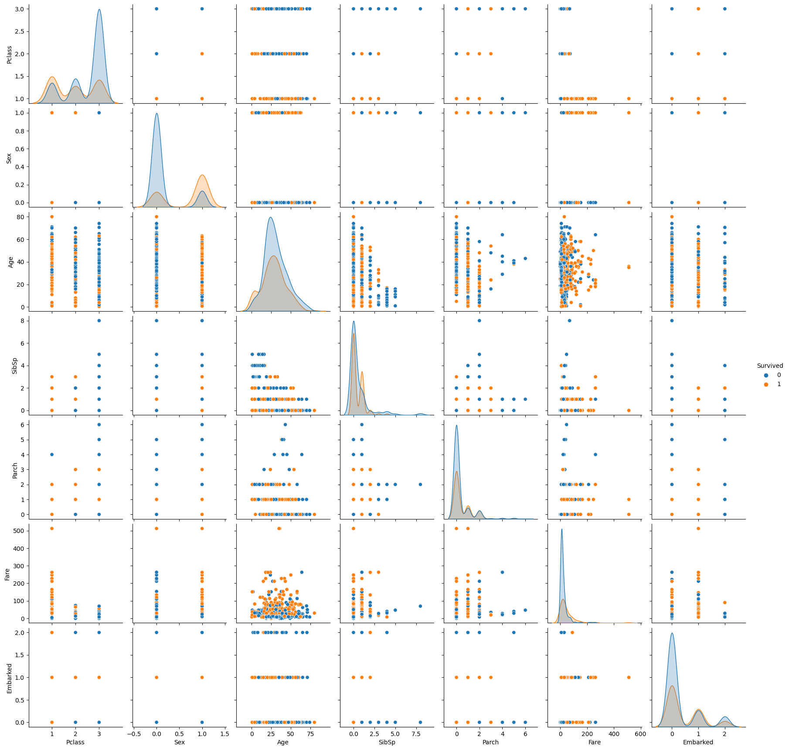
위 데이터 분석으로 알 수 있는 것은?
3등석에 탑승한 남자 승객의 생존률은?
total = df[df["Pclass"] == 3 & df["Sex"] == 0] survived = total[total["Survived"] == 1] # 3등석에 탑승한 남자 승객의 생존률 print(len(survived) / len(total)) # 0.13544668587896252 # 전체 생존률 print(df["Survived"].mean()) # 0.3838383838383838
⇒ 객석의 등급과 성별이 생존률에 영향을 미침
df["Sex"] = df["Sex"].astype("int64") # 파이썬 타입을 numpy 타입으로 변환 print(df["Survived"].corr(df["Sex"])) # 0.5433513806577552 print(df["Survived"].corr(df["Pclass"])) # -0.33848103596101536
⇒ 성별과 생존률, 객실 등급과 생존률은 서로 상관관계를 가짐
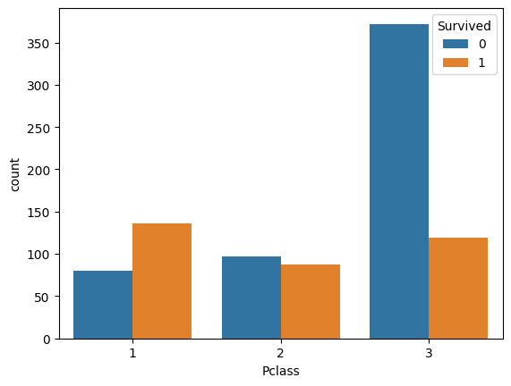
sns.countplot(x="Pclass", hue="Survived", data=df)
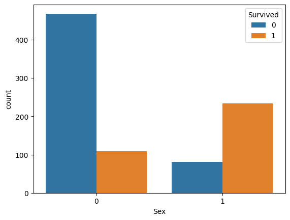
sns.countplot(x="Sex", hue="Survived", data=df)
# Confusion Matrix m = [] for p_class in (1, 2, 3): m_item = [] for sex in (0, 1): total = df[(df["Pclass"] == p_class) & (df["Sex"] == sex)] survived = total[total["Survived"] == 1] m_item.append(len(survived) / len(total)) m.append(m_item) print(m)
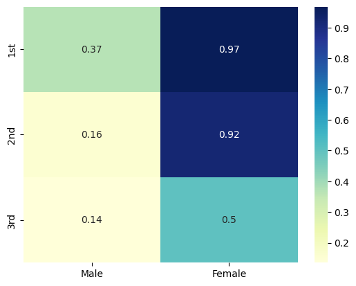
sns.heatmap(m, annot=True, cmap="YlGnBu", xticklabels=("Male", "Female"), yticklabels=("1st", "2nd", "3rd"))